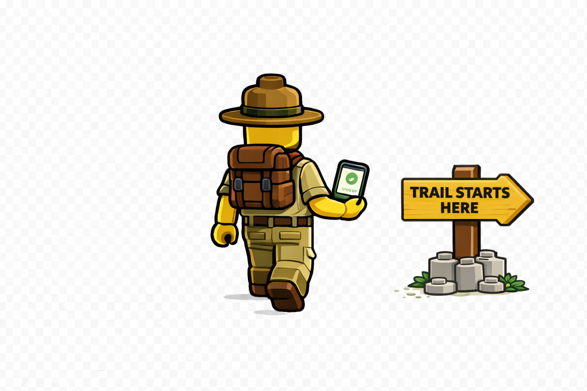
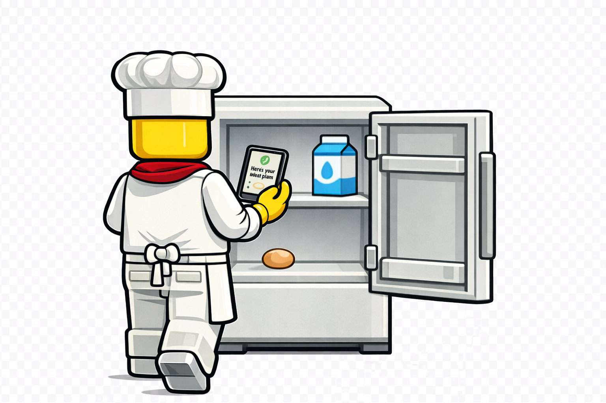

Page 02 · Build Log Series
What I've Been Building
ScoutTrek Automated Posting

Workshop & Wander

Chef's Hat

Step Complete?
Find 2 bricks on this page to continue
Page 02 · Build Log Series
ScoutTrek Automated Posting

Workshop & Wander
Chef's Hat
